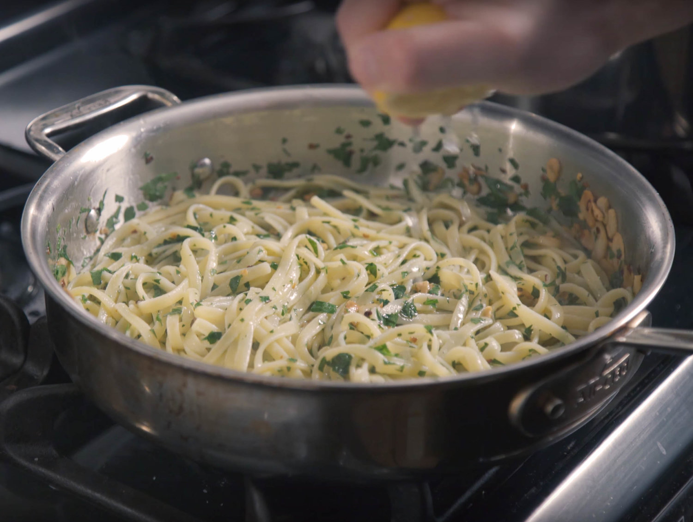

Pasta Aglio e Olio

Description
This is a recipe to make pasta aglio e olio.
Ingredients
- 1/2 head of garlic, separated and peeled
- 1/2 cup flat-leaf parsley, rinsed and finely chopped
- 1/2 cup good quality olive oil
- 1 tsp of red pepper flakes
- 1/2 pound dry linguine
- 1/2 lemon
- salt and pepper to taste
Instructions
- Heavily salt a large pot of water, and bring to a boil. Cook the pasta until slightly underdone, while following the steps below.
- Thinkly slice the garlic cloves, and set them aside. Heat the olive oil in a large sauté pan over medium heat until barely simmering. Add the sliced garlic, stirring constantly, until softened and turning golden on the edges. Add the red pepper flakes and lower heat to medium-low.
- Add the pasta, drained, with about 1/4 cup reserved pasta cooking water. Squeeze the lemon juice over the top, and mix into the pasta with the fresh parsley. If the sauce is too watery, cook for an additional 1-3 minutes, until the pasta absorbs more liquid. Season with salt and pepper, and serve.
Source